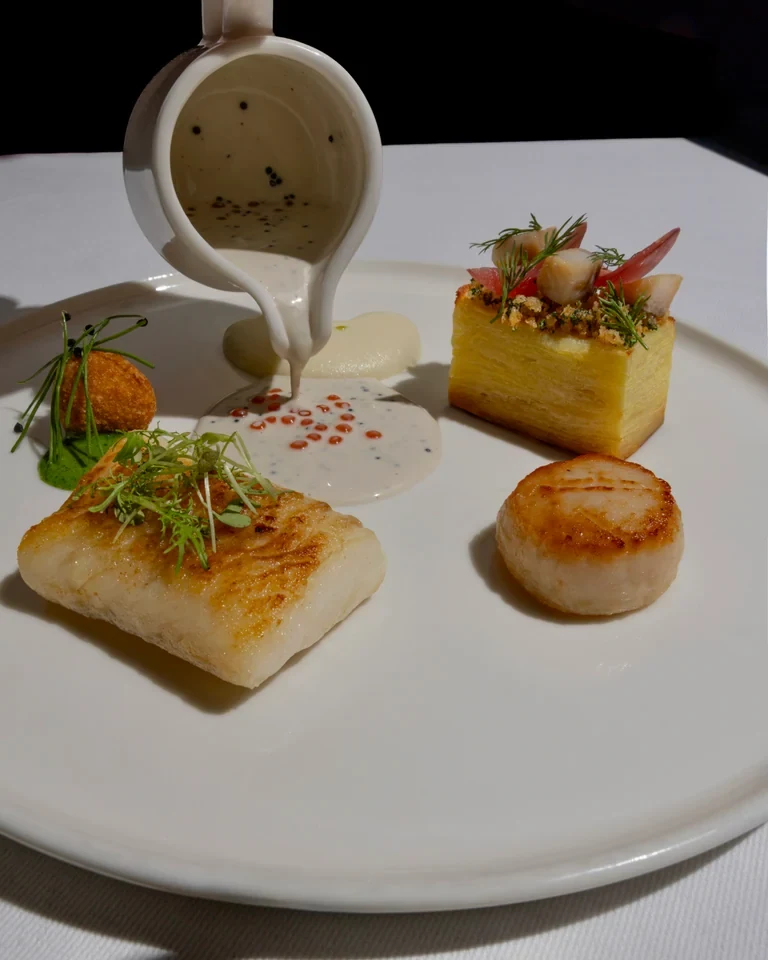

Tbilisi · Live site
Reserve
Seasonal dining at a seven-table restaurant in Tbilisi’s historic centre.
Fine-dining chef
Seasonal menus shaped by close relationships with growers and precise technique.
View projectsMenus begin with what’s in season. I work with growers to find produce at its best, then build each dish around a few ingredients and the techniques that suit them.
Education
Graduated with top marks.
Sample résumé entries